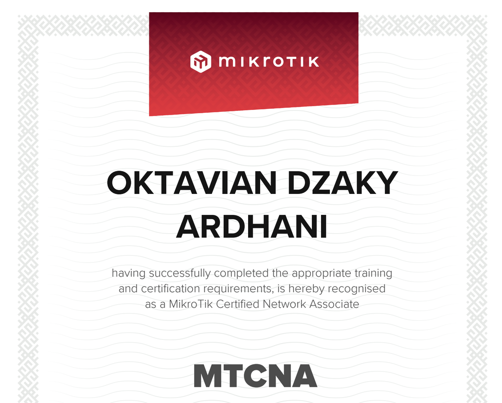
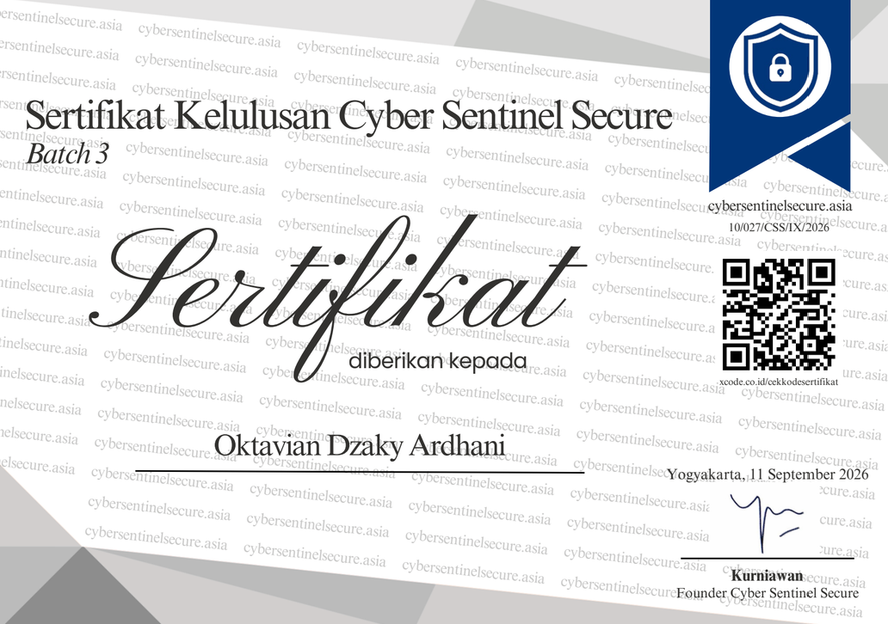
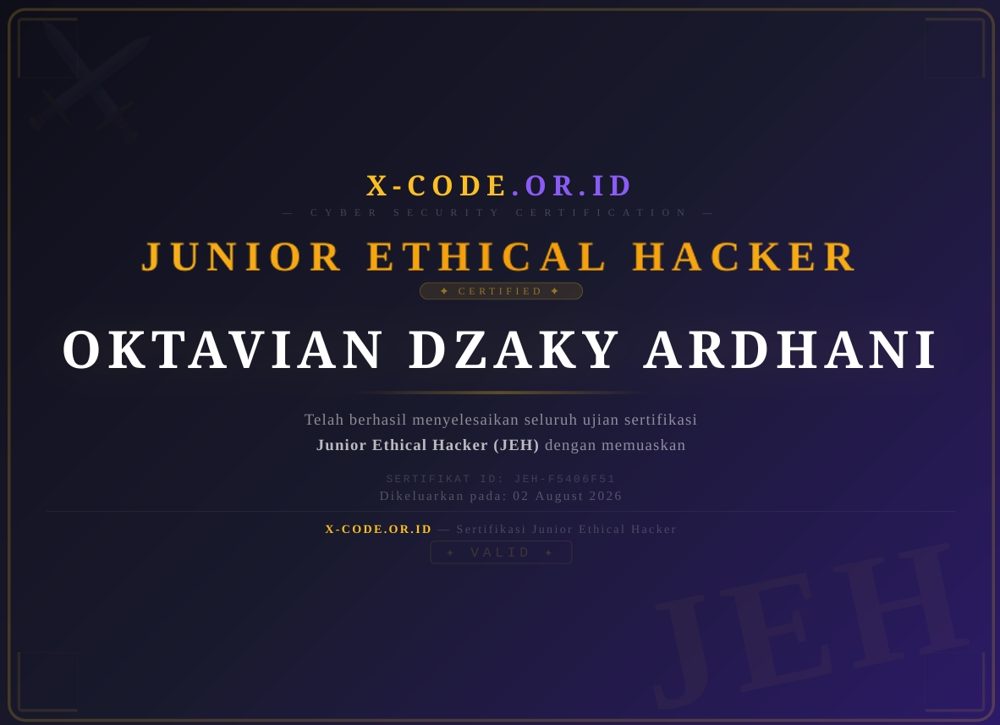
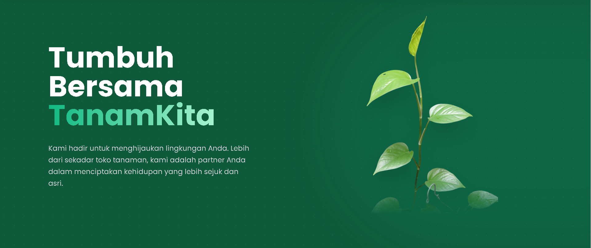
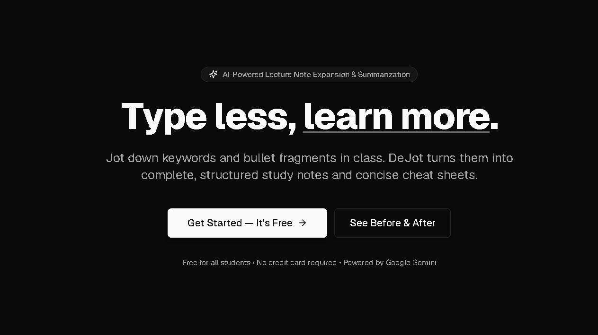

Oktavian Dzaky Ardhani
Web Developer - Informatika
0
Web Developer - Informatika
Saya adalah mahasiswa S1 Informatika di Universitas Teknologi Yogyakarta dengan latar belakang pendidikan Teknik Komputer dan Jaringan (TKJ). Berfokus pada Web Development, Networking, dan Cybersecurity, saya memiliki minat mendalam dalam membangun aplikasi web yang modern, aman, serta berperforma tinggi.
Berbekal pengalaman Praktik Kerja Lapangan (PKL) di lingkungan Internet Service Provider (ISP), saya terbiasa menangani konfigurasi perangkat serta pemecahan masalah jaringan. Saya bersemangat untuk terus berkembang di industri teknologi dan siap berkontribusi secara nyata melalui keahlian yang saya miliki.
Web Development: Berpengalaman dalam membangun antarmuka web yang responsif dan interaktif menggunakan HTML5, CSS3, JavaScript modern (ES6+), Tailwind CSS, serta integrasi backend Supabase.
Networking & Infrastructure: Memahami dasar-dasar perutean jaringan, subnetting, konfigurasi router MikroTik (MTCNA certified), VPN / secure mesh networking menggunakan Tailscale, serta manajemen server berbasis Linux.
Cybersecurity & Lab Testing: Mempelajari pengujian penetrasi web (Junior Ethical Hacker), analisis kerentanan OWASP Top 10, simulasi exploit lab, dan pengamanan lingkungan jumpbox pada jaringan privat.

Sertifikasi resmi MikroTik MTCNA yang membuktikan kompetensi dalam konfigurasi RouterOS, manajemen bandwidth, firewall filtering, wireless, routing, dan network troubleshooting.

Program pelatihan cybersecurity komprehensif yang mencakup defensive security, deteksi ancaman siber, analisis log, dan penguatan sistem keamanan infrastruktur digital.

Pelatihan dan sertifikasi ethical hacking dari X Code yang fokus pada metodologi reconnaissance, scanning, vulnerability assessment, dan simulasi penetration testing.

↗ OpenPlatform e-commerce penjualan aneka tanaman dan bibit penghijauan, yang dilengkapi fitur blog edukasi berkebun serta integrasi chatbot interaktif untuk konsultasi dan panduan perawatan tanaman secara real-time.

↗ OpenPlatform belajar cerdas berbasis AI (Google Gemini 2.0 & Supabase) yang mengubah catatan kuliah menjadi rangkuman konsep terstruktur, flashcards interaktif, dan panduan belajar ujian.
dzaky@jumpbox:~$ tailscale status
100.x.y.z jumpbox-lab linux -
dzaky@jumpbox:~$ ./launch-lab.sh
[✓] Lab network ready. Port 7681 listening.
Lingkungan simulasi laboratorium keamanan siber berbasis container dan jumpbox privat yang terhubung secara aman via Tailscale mesh VPN untuk praktik ethical hacking.